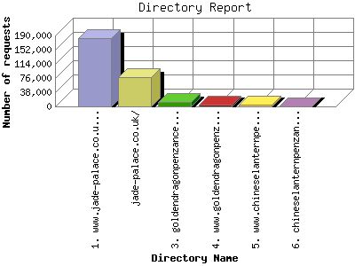

The Directory Report analyzes accesses to this web site's directories. This information can be useful in determining the most requested areas.
This report shows results with at least 0.010000 percent of the total bytes. This report is sorted by amount of bytes transferred.

| Directory Name | Number of requests | Percentage of the bytes | |
|---|---|---|---|
| 1. | www.jade-palace.co.uk/ | 183,958 | 87.91% |
| 2. | jade-palace.co.uk/ | 78,002 | 6.35% |
| 3. | goldendragonpenzance.co.uk/ | 12,092 | 2.89% |
| 4. | www.goldendragonpenzance.co.uk/ | 5,773 | 1.65% |
| 5. | www.chineselanternpenzance.co.uk/ | 4,389 | 1.09% |
| 6. | chineselanternpenzance.co.uk/ | 837 | 0.12% |
This report was generated on May 11, 2011 03:37.
Report time frame July 27, 2010 14:23 to May 10, 2011 23:34.
| Web statistics report produced by: analog 6.0 / Report Magic 2.21 |